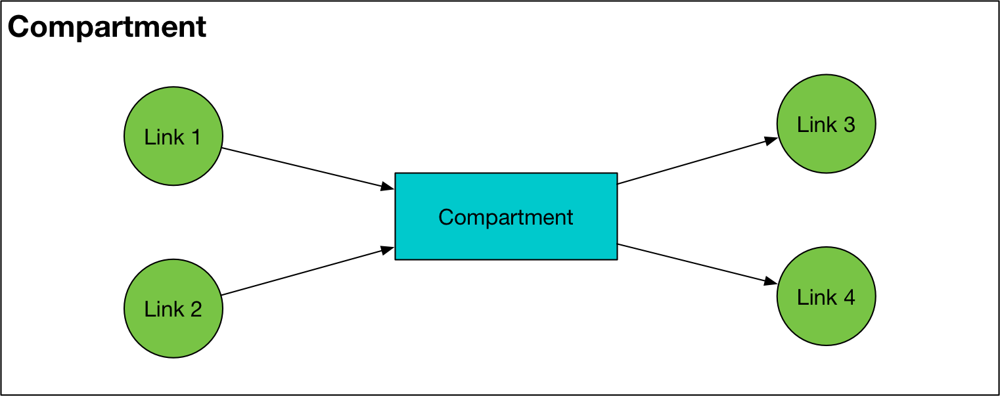
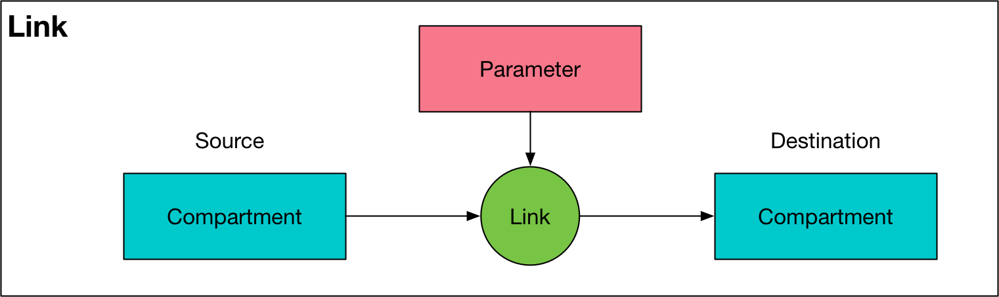
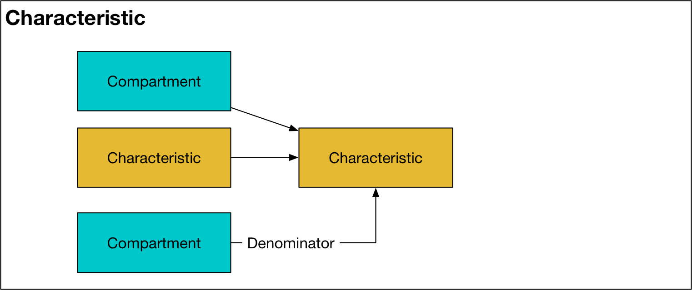
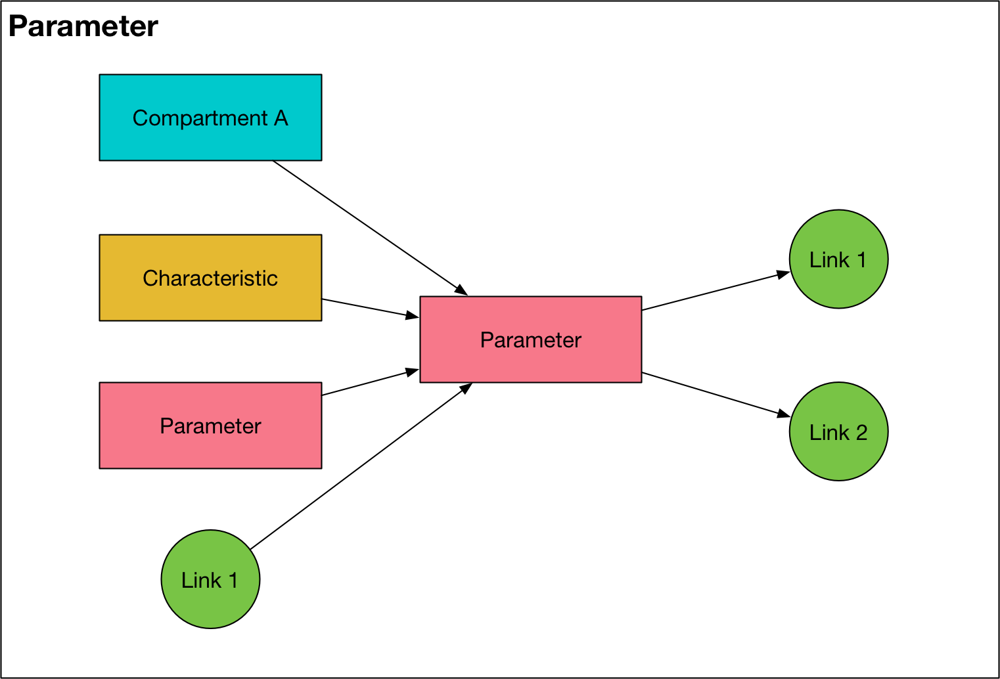
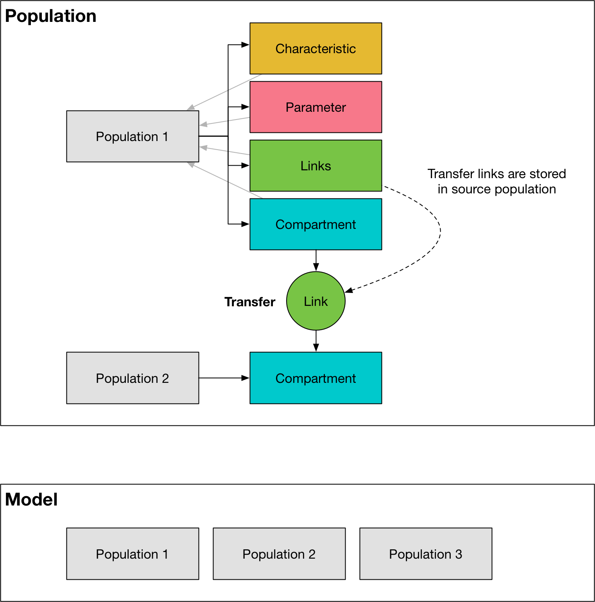
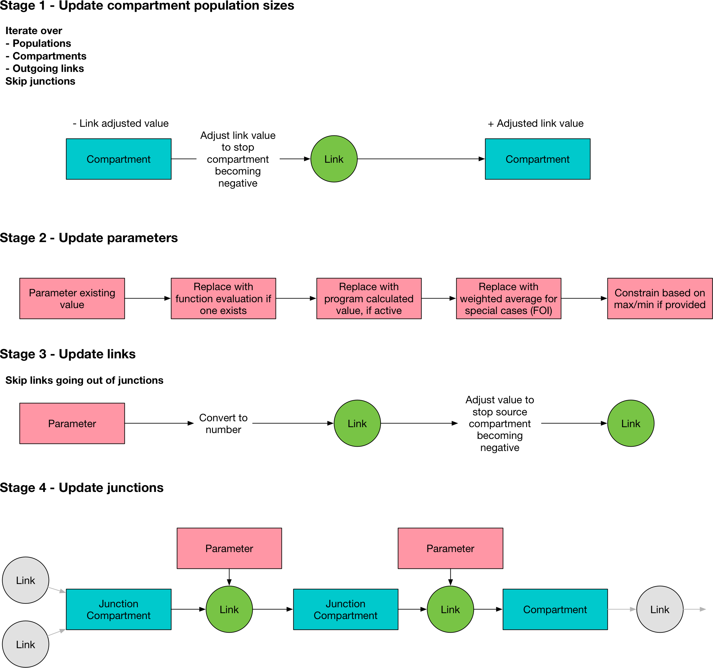

Models (implementation)¶
This page provides an overview of Model objects oriented towards the internal structure and underlying objects. It thus documents ways of interacting directly with Model instances.
Model object structure¶
At its core, models in Atomica are implemented as a computational graph. The nodes in this graph are ‘compartments’, which store numbers of people, and the edges are ‘links’, which move people from one compartment to another. However, there are additional complexities associated with computing the flows between compartments, and generating other model outputs, and we thus introduce additional types of nodes into the graph representing intermediate calculations and outputs.
Model objects serve two purposes
They handle integration of the model, actually performing the calculations required to run a simulation
They serve as the primary storage of model outputs
The reason Model objects serve as primary storage is because the elements in the computational graph already store all of the values relevant to model output, and stores them in a manner that both facilitates their access as well as enables traversal of the relationship between quantities. The organization of the model object is as follows
Model
Population
Compartment
Link
Characteristic
Parameter
where ‘Compartments’, ‘Characteristics’, and ‘Parameters’ all correspond to items in the framework, ‘Links’ correspond to transitions in the framework, and ‘Populations’ correspond to the populations listed in the databook.
We now go through each of these objects in turn.
Compartment¶

A Compartment represents one of the compartments specified in the ‘Compartments’ sheet of the framework. A compartment stores people in a particular state (e.g., susceptible, infected). For each population, there is one Compartment for every entry in that sheet. Compartments have the following key features:
The
valsattribute for the compartment object represents the number of people in that compartmentThe
nameattribute matches the ‘Code Label’ in the frameworkBoolean flags for birth, death, and junction compartments (
tag_birth,tag_dead, andis_junction, respectively)A list of Link objects,
inlinks, that represents flows into the compartmentA list of Link objects,
outlinks, that represents flows out of the compartment
A junction is a special type of compartment that is emptied at every time step, so the vals attribute should be 0 at all times.
Compartments have a number of helper methods
outflowwhich is the sum of all outgoing links at a given point in time. This can also be used as a proxy for the ‘value’ of a junction, because it corresponds to how many people had arrived in the junction at that time step.expected_durationthis returns the time in years that an individual would be expected to remain in the compartment if the outflow probabilities and the compartment size remained the same going into the future (i.e. in a steady state approximation)expected_outflowthis returns a dict showing where people in the compartment would be expected to be after 1 year, on the assumption that the outflows at each time step are probabilistic and constant
The last two methods expected_duration and expected_outflow are mainly for application diagnostic purposes.
Link¶

A link represents one of the transitions specified in the ‘Transitions’ sheet of the cascade workbook. For each population, there is one Link for every entry in the transition matrix - note that this means there are separate instances of a Link object for any repeated tags. There is also an instance of a Link object between corresponding pairs of compartments between any two populations that have transfers between them. The transfer links are stored in the source population. A
Link draws its value from a Parameter object. A Link has the following key features:
The
valsattribute for the link represents how many people are being moved from one compartment to another at a given time. The rule ispopsize[ti+1]=popsize[t]+link_value[t]. To apply a link, the link value is subtracted from the source compartment, and added to the destination compartment. These values correspond to the actual number of people moved at each time step (after incorporation of any constraints to prevent negative compartment sizes). Note that this means that the values are not annualized. This greatly improves consistency and usability when working with the raw matrices, generally output to a user goes via helper methods such as plotting or exporting, and these take care of annualization where required.The
nameattribute of theLinkis the name of theParameterobject that the link obtains its value from, with:flowappended to itThe
sourceattribute is an instance of aCompartmentobject, corresponding to the source compartmentThe
destattribute is an instance of aCompartmentobject, corresponding to the destination compartmentThe
parameterattribute is an instance of aParameterobject, corresponding to theParametersupplying values for the link
Characteristic¶

A characteristic represents a grouping of compartments, with optional normalization. In each population, there is one Characteristic object for every entry in the ‘Characteristics’ sheet in the cascade workbook. A characteristic may be used within other characteristics and in parameter computation. A Characteristic has the following key features:
The
valsproperty attribute represents either a number of people, or a fraction of people (depending on whether the denominator is set or not)The
includesattribute is a list whose elements are eitherCharacteristicorCompartmentobjects. At each timepoint, thevalsattribute of the objects in theincludeslist are summed together to calculate the value of the currentCharacteristicThe
denominatorattribute is optionally provided as aCharacteristicorCompartmentobject. If provided, at each timepoint the sum of theincludesobjects will be divided by thevalsattribute of thedenominator. The most common usage scenario for this is to define a characteristic corresponding to a prevalance (e.g., where theincludeslist sums up the number of infector people, and the denominator is a characteristic including all people in the population). If adenominatoris supplied, then theis_fractionflag isTruefor theCharacteristicThe
update(ti)method is called during integration, and computes thevalsattribute at time indextibased on theincludesanddenominatorobjectsThe
dependencyflag indicates whether the value of the characteristic needs to be computed during integration or not. ACharacteristicis dependent if it is used in aParameterfunction. IfFalse, then the value of the characteristic will be computed at the end of integration using vectorized operations for efficiency.
To save storage space after the simulation is complete, the values for characteristics are not generally stored. Instead, the vals property attribute dynamically computes the characteristic value based on the compartment sizes, which are retained. This is useful because there are often more characteristics than compartments, and all characteristics can be computed based on compartment values. However, to avoid the computational overhead during model integration, the characteristic contains a
_internal_vals member variable that actually stores the characteristic value during integration. If this is not None, then the vals method will simply return the _internal_vals array.
Parameter¶

A parameter object provides a way to compute variables based on the value of other variables, either for use as simulation outputs, or to dynamically compute transition rates (i.e. Link values) during integration. There is one Parameter object for every entry listed in the ‘Parameters’ sheet of the cascade workbook, plus an additional Parameter for every pair of populations that has a transfer between them. Note that there is only one transfer Parameter for every pair of
populations, but there is a Link between every corresponding compartment within those populations - so for example, aging from 0-4 to 5-14 will have a single Parameter representing the total number of people changing populations, and there would be links between [0-4 Sus]->[5-14 Sus] and [0-4 Vac]->[5-14 Vac].
A Parameter has the following key features:
The
linksattribute stores a list ofLinksthat derive their value from theParameterobject. If this list is empty, then theParameteris either a dependency for anotherParameter, or anOutputobject.The
valsattribute represents either a transition rate (in units of fraction/probability or number of people) or otherwise a quantity with unknown units. If a parameter represents a transition rate, its units are assumed to be annualized, and will be converted to timestep-based values during integration (the method for conversion depends onunitsattribute of theParameter). At construction, theParameteris loaded in with values supplied from theparsetif values are availableThe
fcn_stroptionally specifies a formula that is used to compute the value of theParameterdynamicallyIf an
fcn_stris provided, thedepslist contains a list of objects whose values are used in thefcn_strformula. Allowed objects areCompartments,Characteristics,Parameters, andLinks. ACharacteristicorParameterthat appears in adepslist is considered a dependency and the value of that object needs to be computed during integration. If aParameteris used to supply values for a transition, then it is considered a dependency, and it, together with all of the variables in thedepslist, needs to be computed during integration. Otherwise, ths parameter is only used for output, and it is computed using vector operations at the end of the simulation. Because parameters are used to compute values for links, the inclusion ofLinksin parameter functions is only permitted if the parameter is not a dependency (i.e., if it is an output).The
dependencyflag indicates whether the value of the parameter needs to be computed during integration or not. AParameteris dependent if it appears in thedepslist of anotherParameter, or if thelinkslist is not empty (which indicates the parameter value is required during integration to supply the flow rates for the links).The
scale_factorrescales the parameter value - this is the calibration y-factorThe
limitsproperty optionally specifies lower and upper bounds for the parameter value. These are hard limits that are applied right before theLinkvalues are computed, so they are implemented after any programs or special operations (i.e. interactions) are computedThe
pop_aggregationflag specifies whether the parameter value will be computed inModel.update_parsor inParameter.update(). Parameter aggregation across populations (e.g. for cross-population disease transmission) is governed by the special functionsSRC_POP_AVGandTGT_POP_AVGand these calculations are implemented inModel.update_parsbecause they require multipleParameterobjects.The
update(ti)method is called during integration, and computes thevalsattribute at time indextibased on thefcn_strif it is notNoneThe
source_popsize(ti)method is used to compute the number of people reached by thisParameterat time indexti, which is required when computingProgramdisaggregations if theParameteris in number units. Thesource_popsizeis defined as the sum of the source compartment sizes for everyLinkwhose parameter is supplied by thisParameteri.e., it issum([Link.source.vals[ti] for Link in Parameter.links]). As this value may be accessed multiple times when computing programs, it is internally cached for efficiency.The Note that transfer parameters currently do not support having a function - instead, they only draw their values directly from interpolated data. This is because transfer parameters link populations, and as such they are specified in the databook rather than in the framework.
Population¶

A Population stores lists the base objects listed above, all associated with a single population. It has the following key features:
compsis a list ofCompartmentobjectscharacsis a list ofCharacteristicobjectslinksis a list ofLinkobjectsparsis a list ofParameterobjectsThe
get_comp(name),get_links(name),get_charac(name), andget_par(name)methods return their respective objects based on thenameattribute, which allows objects to be located within a population based on their name. This is implemented as a dictionary lookup to improve performanceThe
get_variable(name)will return a list of variables with that name, regardless of their type. It also supports looking up links based onsource_name:dest_name:par_namesyntax where each of those quantities is optional. For example,sus:vacreturns all links between compartmentssusandvac.The
popsize(ti)method returns the number of people in all compartments (except birth and death) at timepointti. However, typically this value is accessed via aCharacteristicwhich improves efficiency (such aCharacteristicis typically defined anyway, so that it can be used as an output or in aParameterfunction).The
gen_cascadefunction takes in asettingsobject, and constructs and wires together all of the compartments, characteristics, links, and parameters required. It is called automatically by thePopulationconstructor.The
initialize_compartmentsmethod assigns the initial compartment values based on the characteristics provided in the parset.
Model¶
The Model object is a class that contains all of the Populations for a simulation, and has methods to perform integration. Its key attributes are:
popsa list of population groups that this model subdivides into.interactionsstores the data associated with inter-population interactionspar_listis a list of all parameters code names in the model for use during integrationprograms_activeis True or False depending on whether programs will be used or notprogsetis a copy of the progset (containing the program-related parameters) used for this runprogram_instructionsis a copy of the program instructions used for this simulation runtis the simulation time vector, shared by all variables within this modeldtis the simulation time stepframeworkis a copy of the framework which stores metadata associated with all of the integration objects (these may be user-customized if the user has added extra columns to the framework file) as well as stores the cascades and plot information used by theResultobject for plotting and exporting_vars_by_popa cache to look up lists of variables by name across populations_t_indexkeeps track of array index for current timepoint data within all compartments._program_cachecaches some program values for use during integration
The key methods are
buildwhich constructs required populations. As noted above, thePopulationconstructor instantiates objects representing the cascade within a population. However, if transfers are present, then there are alsoParametersandLinksrepresenting cross-population interactions. These are stored in the sourcePopulationso that they can be treated the same as all otherParametersandLinksduring integration, but they are instantiated bymodel.build()because they are intrinsically properties that intrinsically span populations.processwhich actually integrates the simulationThe
run_modelwhich wraps building, processing, and computing results. The input consists of settings, aparset, and optionally aprogsetandProgramInstructions, and the output is aResult
Note that the Model forms the primary storage of the Result object, and thus it is possible to retrieve detailed output from the model run by querying the Result object. This also means that there is minimal post-processing time to reorganize the model outputs, because they are generally accessed in-place.
Building¶
Building the model proceeds in the following stages
Populationobjects are instantiatedInitial characteristic values used to compute the initial compartment sizes, which are loaded into the
CompartmentobjectsPopulate the
Parameterobjects with interpolated data values, for all data that is presentInstantiate the
ParameterandLinkobjects associated with transfers, and populate theseParameterobjects with the transfer data values
Integrating¶

The integration workflow is an interative process, alternating between updating the compartment sizes, and updating the link values. The main integration loop is in Model.process(). The stages are as follows
self.update_comps() # This writes values to comp.vals[ti+1] so this will be out of bounds if self._t_index == self.t.size-1
self._t_index += 1 # Step the simulation forward
self.update_pars()
self.update_links()
self.update_junctions()
In the first stage,
Model.update_comps()updates the compartment values using the values contained in theLinks. The link values will have been set at the end of the previous time step. Junction compartment sizes are skipped because they are always zero and dealt with separately.In the second stage,
Model.update_pars()updates the parameter values. The parameter update proceeds as follows:First, if a program has a function, that function is evaluated
If programs are active, the parameter value is overwritten using the program set
If averaging over populations is required, this is performed now and the parameter values are again updated
If the program has limits, the value is clipped to the allowed range
In the third stage,
Model.update_links(), the parameter values are propagated into the link objects. This proceeds as follows:The proposed link values are computed as a number of people. This involves rescaling the parameter value onto the simulation time step, and converting it to a number of people. This conversion depends on the units that the parameter is in, and is performed here. Note that if a parameter is in units of number of people, the outflow is disaggregated proportionately over all of the links at this step, depending on what fraction of the total number of people reached by the parameter are attributable to each link.
If a compartment would become negative because the proposed link values flowing out of a compartment exceed the number of people in that compartment, all of the outgoing links for that compartment are rescaled such that the total number of people leaving matches the compartment’s size. Note that only people currently in the compartment are eligible to leave the compartment, so it is not possible for new inflows to contribute to outflows.
This update is only performed for links that flow out of non-junction compartments. This is because outflows from junctions are resolved in the next step.
In the final stage,
Model.update_junctions()computes the junction outflows. This is performed at this point in order to ensure that junction outflow links have a non-NaN value at the last timestep. To resolve the junction outflows:The number of people in the junction is determined by adding up the value of all of the incoming links
The outflow links are calculated based on the parameters governing transitions out of junctions - these must be in ‘proportion’ units so no timestep rescaling is necessary
If the outflow is into a non-junction compartment, then nothing further needs to be done, because the downstream compartment will be updated by
Model.update_comps()at the next timestep. However, if the outflow is into another junction, that junction’s value is updated, and the junction calculation is re-run to flush those people as well.The calculation proceeds until all people have left the junctions. An infinite loop can occur if there is a cycle between junctions, without any normal compartments between them. In that case, the loop will be aborted with an error.
Note that the initialization might result in junctions having a nonzero number of people at the first time step. Therefore, the junctions need to be flushed prior to the simulation starting. This is performed by updating the parameters and junctions, and then updating the parameters, links, and junctions again. For the initial flush, a special flag is passed to
update_junctionswhich tells it to use the junction’s current nonzero initial value, instead of summing over incoming links
At the end of integration, the values for non-dependent parameters need to be computed - this is also performed in model.process().
Linking and unlinking¶
The network of integration objects makes it easy to traverse the graph to trace back quantities. For example, link.source.outlinks would be a list of all of the outgoing links for the source compartment given an initial link. Because cyclical references are common (e.g, a link has a source which has that link in source.outlinks) an additional step is needed in order to be able to pickle and unpickle Model objects. This step recursively replaces all of the references with
IDs. It proceeds as follows
Model.unlinkreplaces references with IDs in all of it’s properties. Then it callsPopulation.unlink()on every population.Population.unlink()replaces all of its references, and then callsVariable.unlink()on all of its variables. This allows variables to control how they unlink themselves, which is important because some variables have references that others do not (e.g.,CharacteristicshaveincludeswhileParametershavedeps). At the end of this process, the variables are only stored once in thePopulationlists e.g.Population.comps()Model.relinkreverses this. First it assembles a dict mapping ID to objects. Then it callsrelinkon all populations, passing in this dict of objects. In turn,Variablescanrelinkthemselves using this dict. The dict needs to be constructed at theModellevel so thatPopulationobjects canrelinktransfers that span populations
The whole process is transparent to the user, because it is controlled by the __getstate__, __setstate__ and __deepcopy__ methods, so users generally will never see a Model object in an unlinked state.